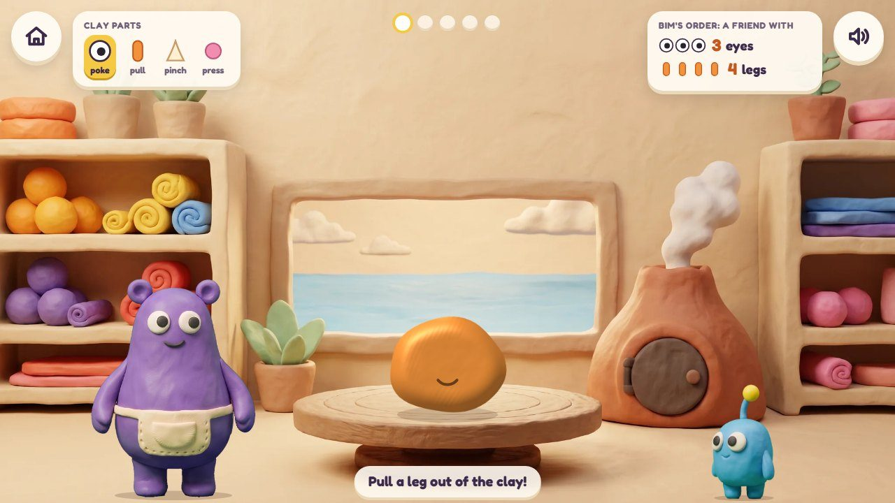
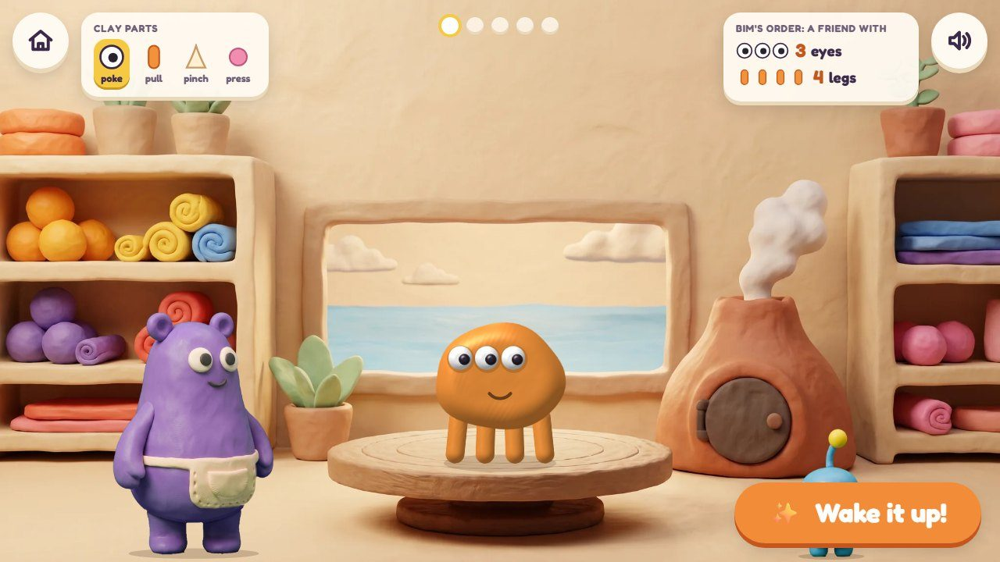
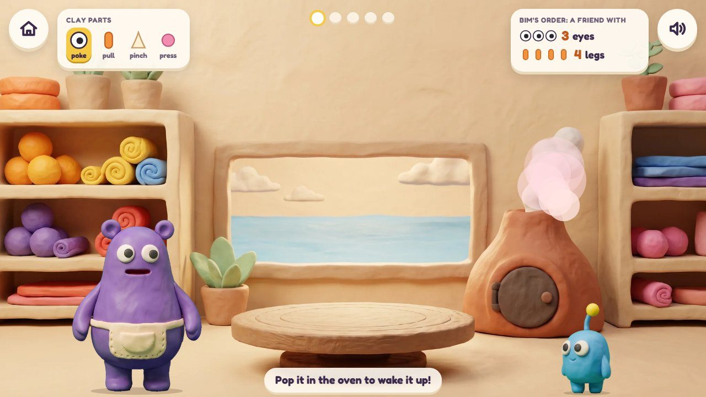
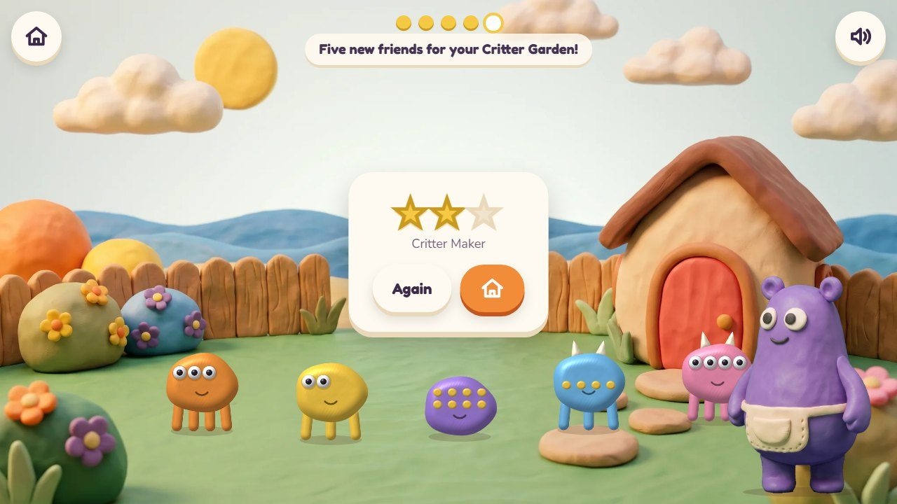
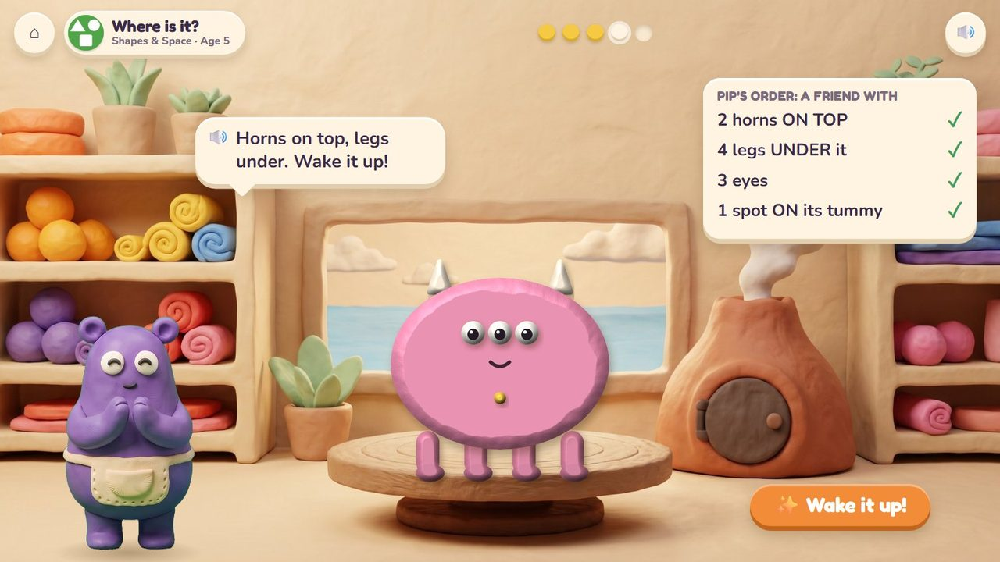
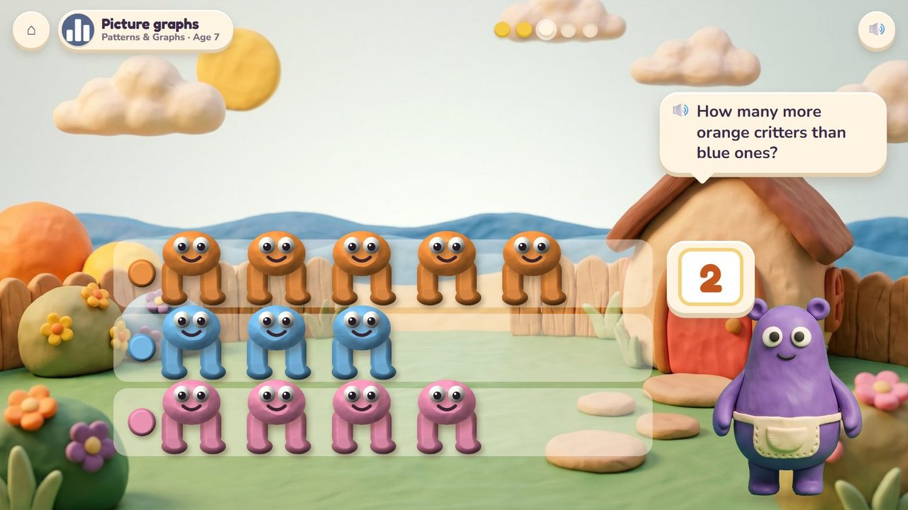

Critter Maker
Build a clay critter to a friend's order, then wake it up.
35 lessons (18 taught here first, the rest practised here) in 5 topics:
Counting & NumbersAdding & Taking AwayMeasuringShapes & SpacePatterns & Graphs

The game
A friend brings an order card ("a friend with 3 eyes, 4 legs and 2 horns"). The child pokes in eyes, pulls out legs, pinches up horns and presses on spots, then wakes the critter in the little volcano oven; the friend checks it part by part while Mumba counts aloud. Every critter made walks into the Critter Garden, where the critters made can be sorted and graphed.
Hands-on
Poke, pull, pinch and press the clay; tap a part to take it off.
The end of a round
The critters made today walk into the Critter Garden.
How it plays
These frames are the real app today; the frames further down show the same game in other lessons and ages.
1An order
Pip's order card: a friend with 2 eyes and 4 legs.
🔊 “Pull a leg out of the clay!”

2Build it
Legs pulled out, eyes poked in.

3Wake it up!
Into the volcano oven: it wakes up and walks out.
🔊 “Pop it in the oven to wake it up!”

4The Critter Garden
The day's critters live in the garden.
🔊 “Five new friends for your Critter Garden!”
The quick round (from age 6)
A row of critters is shown: type how many legs, eyes or spots (4 critters × 3 legs). Ten questions at 6-7, a 60-second round from 8; your time and your best on screen; only right answers count; a miss shows the answer and comes back later. No clock under 6.
The same game, other lessons and ages
The badge at the top left says the topic, the lesson and the age.

5Patterns: red, blue, red, blue · age 4
Red, blue, red, blue… press the next spot.

6Where is it? · age 5
Horns ON TOP, legs UNDER, a spot ON its tummy.

7Picture graphs · age 7
In the Critter Garden the critters line up by colour: how many more orange than blue?
From age 3 to 7
| Age 3Pre-school | Count parts to 5; sort by colour; copy a pattern of spots. |
| Age 4Pre-K | Count to 10; patterns (red, blue, red, blue); above and below. |
| Age 5Kindergarten | Count out a number; where is it (on top, under); sort into groups. |
| Age 6Grade 1 | Add three numbers (eyes on three critters), doubles, tally marks and picture graphs. |
| Age 7Grade 2 | Picture graphs of the critters made; two-step stories. |
| Age 8 to 10Grades 3 to 5 | From Grade 3 these lessons are practice screens, not games. |
What changes from lesson to lesson
The order
how many parts, which parts, where they go, how many critters
Numbers
parts to 5, to 10, then sums of parts, then parts × critters
Help
Mumba counts each part aloud; the order card ticks each line
How you answer
building with the clay; the number pad for totals
Its 35 lessons
Age by age they are on the full list; here grouped by topic (the first activity named teaches a lesson, the others practise it).
Counting & Numbers 4
- How many? Up to 3
early yearsPoke Pals · Critter Maker - How many? Up to 5
early yearsPoke Pals · Critter Maker - The same number
early yearsPoke Pals · Critter Maker - How many? Up to 10 in a row
early yearsPoke Pals · Critter Maker
Adding & Taking Away 4
- Put together, up to 5
early yearsPoke Pals · Critter Maker - Adding is putting together
K.OA.1Poke Pals · Critter Maker - Stories: put together, take apart
1.OA.1Island Hopper · Critter Maker - Stories with three numbers
1.OA.2Island Hopper · Critter Maker
Measuring 6
- Big and small
early yearsCritter Maker · Boat Load - Long and short
early yearsCritter Maker - Longer and shorter
early yearsCritter Maker - Taller and shorter
early yearsCritter Maker - Compare lengths
K.MD.2Kart Cup · Critter Maker - Order three by length
1.MD.1Kart Cup · Critter Maker
Shapes & Space 4
- Find the same shape
early yearsMirror Wings · Critter Maker - Sides and corners
early yearsMirror Wings · Critter Maker - Above, below, beside
early yearsPeep Parachutes · Critter Maker - Where is it?
K.G.1Peep Parachutes · Critter Maker
Patterns & Graphs 17
- Sort by colour
early yearsCritter Maker · Poke Pals - Sort by shape
early yearsMirror Wings · Critter Maker - Sort by size
early yearsCritter Maker - Copy a pattern
early yearsCritter Maker · Poke Pals - Sort and count
early yearsCritter Maker · Poke Pals - Patterns: red, blue, red, blue
early yearsCritter Maker · Poke Pals - Patterns: ABB and ABC
early yearsCritter Maker - Make your own pattern
early yearsCritter Maker · Mirror Wings - Sort into groups and count
K.MD.3Critter Maker - Which group has the most?
K.MD.3Critter Maker - Growing patterns
extraCritter Maker - Tally marks and picture graphs
1.MD.4Critter Maker - Read a graph: how many more?
1.MD.4Critter Maker · Treasure Shop - Number patterns
extraNumber Lift · Critter Maker - Picture graphs
2.MD.10Critter Maker · Treasure Shop - Bar graphs
2.MD.10Treasure Shop · Critter Maker - Graph stories
2.MD.10Critter Maker
Questions
- Picture graphs made from the child's own critters: a good bridge to graphs?
- Anything in the storyboard to change (say the frame number)?